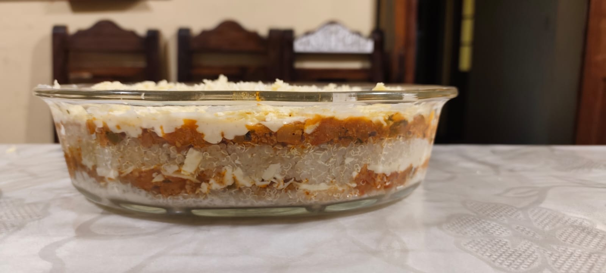

4 Hours
Traditional Culinary Experience
Dynamic Menu · Morning
- ✓ Visit Mercado Central & Welcome Cocktail
- ✓ Seasonal main dish and dessert of the day
- ✓ Special menus (e.g. meatless Ají for Semana Santa)
- ✓ Vegetarian options always available